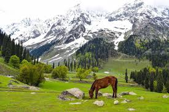
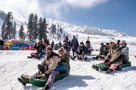
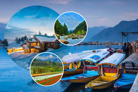

Discover the beauty of Kashmir's top attractions!
From the serene Dal Lake to the snowy peaks of Gulmarg, Kashmir offers a plethora of breathtaking sights. Plan your visit with our comprehensive guide that includes travel itineraries, photo galleries, and local tips.
  